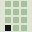
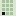

Logo la palabra y el año en doce casillas
El símbolo es el año. Doce casillas, enero arriba a la izquierda y diciembre abajo a la derecha. La del mes en curso va llena, así que el logo cambia solo cada mes: el sitio lo dibuja con la fecha del día, y el ícono de la pestaña también.


Color el papel del libro contable y una tinta
| Lienzo | #DCE6D3 | El papel | 14,30:1 | |
| Tinta | #141414 | La letra, y lo lleno: el mes y el día de hoy | ||
| Verde | #4A5A44 | Lo secundario y lo que ya pasó | 5,75:1 | |
| Línea | #A9C0A0 | Renglón y columna; nunca texto | 1,52:1 | |
| Rojo | #B3261A | Solo lo que vence | 5,08:1 | |
| Rojo noche | #E8553F | El mismo rojo sobre tinta | 5,09:1 |
Lleno: en cursoRojo: venceNada más tiene color.
Recurso propio el año en doce, sobre papel columnar
El almanaque al revés. En un almanaque el rojo es feriado; aquí es plazo. Cada punto es una fecha del calendario del SII de 2026: el F29, las cotizaciones y lo de una vez al año. El papel es el de un libro contable: verde pálido, renglón y columna, doble raya donde va un total.
Letra Recursive · OFL · una familia, dos voces
Aa 20
Mono 0 · para leer
El IVA de septiembre se declara hasta el martes 20 de octubre.
Aa 20
Mono 1 · para las cifras
13 · 20 · 28 · 12 · 13 · 20
Recursive tiene un eje que la vuelve monoespaciada sin cambiar de familia: el texto se lee en sans y las fechas se encolumnan en mono, con las mismas letras. Sin el eje casual.
Doceavo es un concepto de SpindleLab: el estudio y su contadora no existen. Las fechas son las del calendario del SII de 2026, consultadas el 16-oct-2026.07 · Doceavo